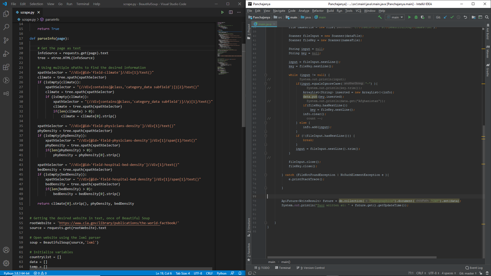

Made this project with my team during StarterHacks 2020. The idea is connect people who are affected by
natural disasters with their family members, by using the infrastructure that rescuers already have in place.
Projects
1 / 3

2 / 3

Used Beautiful Soup to extract information from CIA World Factbook, and then uploaded said information
Cloud Firestore, using Java Firebase Admin SDK.
Cloud Firestore, using Java Firebase Admin SDK.
3 / 3
Using the database mentioned in the previous project, made a REST API, using Java and the Sprinboot Framework.
To the right are the outputs from a couple get requests to the API.
To the right are the outputs from a couple get requests to the API.
Technical Skills
Languages
Java, Python, HTML/CSS, JavaScript, C
Software
Eclipse IDE, NetBeans, MS Office, Selenium 2.0, Autodesk Maya, Adobe
Photoshop
Adobe Illustrator, Android Studio, Oracle VM VirtualBox, Adobe Premiere,
Altera Quartus
Operating Systems
Debian, MS Windows, Mac OSX, Android, Networking Fundamentals
Awards
Certificate Of Distinguishment, Canadian Computing Contest, 2017Best Use Of Google Cloud Platform, StarterHacks 2020